WineWhisper
Chaque bouteille à son apogée
Votre cave, en 3D, dans votre poche. Un sommelier qui la connaît par cœur. Et une simple photo pour y ajouter un vin.
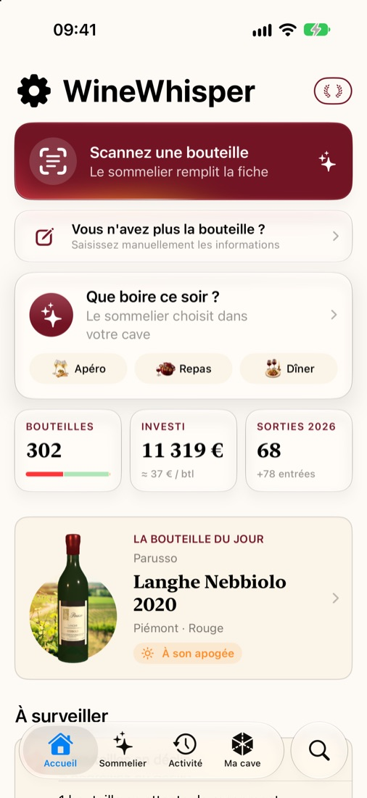
Cave 3D
Votre cave, comme si vous y étiez
Décrivez vos étagères une fois : leur nombre, les bouteilles par couche, les couches superposées. WineWhisper reconstruit votre cave en 3D, et chaque bouteille y porte sa propre étiquette.
- Retrouvez une bouteille en un geste.Depuis la fiche d'un vin, touchez « Voir dans la cave » : son emplacement s'allume.
- Rangez sans réfléchir.Les nouvelles bouteilles attendent dans un sas. WineWhisper propose la meilleure place, à côté du même millésime, du même vin ou du même domaine, et vous la posez d'un toucher.
- Plusieurs caves.Grand CruUne cave de service, une cave de garde, un casier chez des amis : chacune a sa forme et son contenu. La version gratuite range jusqu'à 24 bouteilles dans une cave.
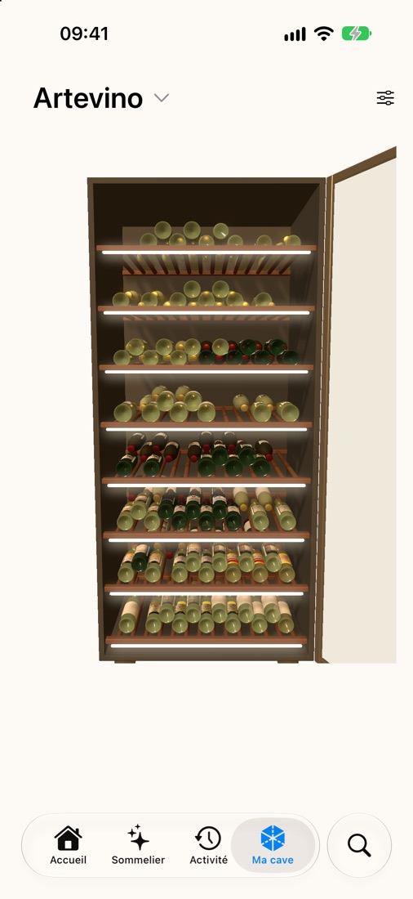
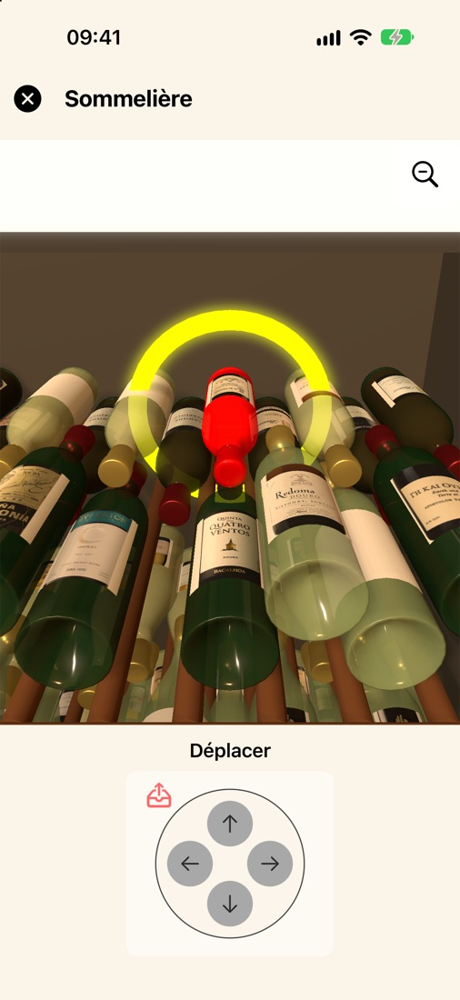
Sommelier
Un sommelier qui connaît votre cave
Dites-lui l'occasion, il choisit dans vos bouteilles.
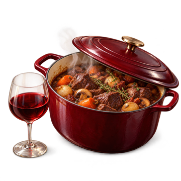
Repas à la maison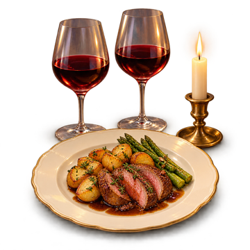
Recevoir à dîner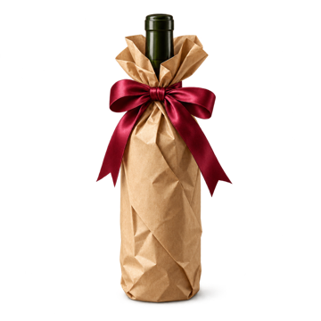
Bouteille à offrirTouchez une image, précisez si vous voulez un plat ou une couleur, et le Sommelier vous propose la bouteille idéale, avec ses raisons, ainsi que deux autres choix.
Je choisis pour vous la meilleure bouteille de votre cave.
- Il juge le vin, pas son prix.Le choix repose sur la réputation de l'appellation et sur le moment de la bouteille : un vin à son apogée passe avant un vin encore jeune.
- Il s'adapte à l'occasion.Un vin léger pour l'apéritif, une belle appellation pour un cadeau, une bouteille à finir pour un repas du quotidien.
- Un plat en tête ?Écrivez-le en toutes lettres, « magret aux cerises » ou « curry de légumes » : il cherche l'accord dans votre cave.
- Je l'ouvre.Un toucher, et la bouteille sort de la cave et rejoint l'historique.
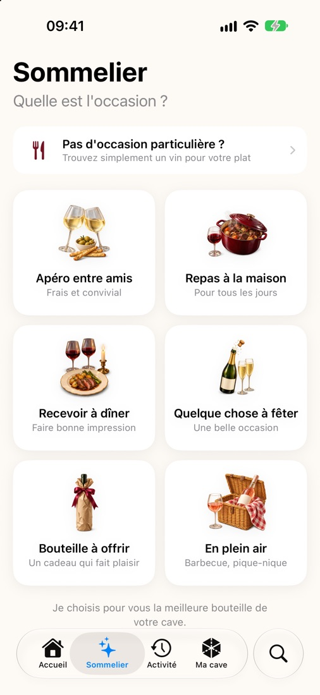
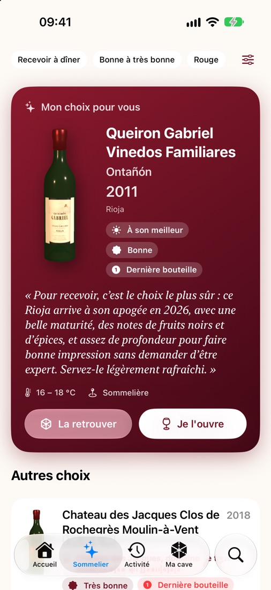
Scan d'étiquette
Une photo, une fiche complète
Photographiez l'étiquette. Le sommelier lit le domaine, la cuvée, l'appellation et le millésime, puis remplit la fiche : cépages, profil du vin, notes de dégustation, température de service, carafage, accords et période de garde.
Ça marche aussi pour le petit vigneron absent de toutes les bases de données.
Vous pouvez tout vérifier et tout corriger avant d'ajouter la bouteille. Et si vous préférez, la saisie manuelle reste à portée de main.
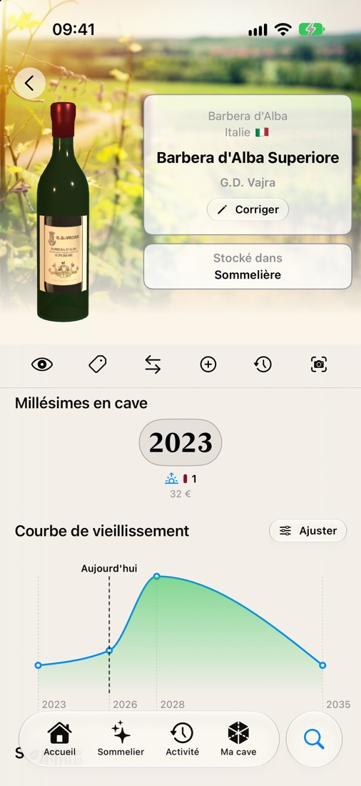
Garde
Le bon moment pour chaque bouteille
Chaque vin a sa courbe de vieillissement, de la jeunesse à l'apogée, puis au déclin. WineWhisper la trace millésime par millésime, et vous pouvez l'ajuster selon votre propre palais.
L'accueil vous montre les vins prêts à être dégustés, et vous signale ceux qu'il ne faut plus trop attendre.
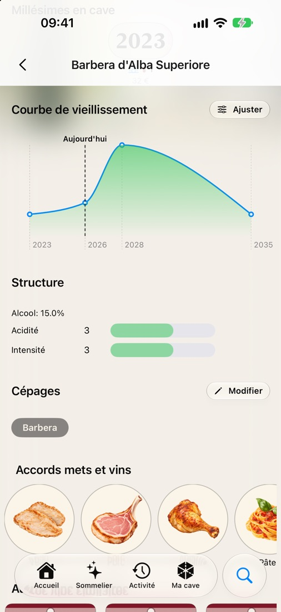
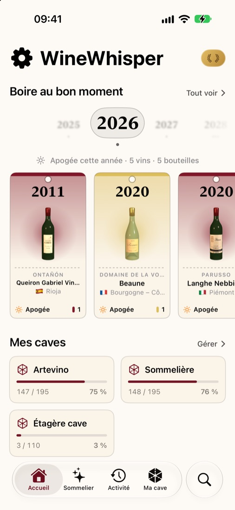
Statistiques
Votre cave en un coup d'œil
- AnalyseLa répartition par couleur, par région et par phase de garde.
- FinancesGrand CruLe montant investi et vos achats mois par mois, d'après vos prix d'achat, et la valeur des bouteilles à ouvrir avant qu'elles perdent leur intérêt. La fiabilité du chiffre est indiquée.
- ActivitéLes entrées et les sorties, mois après mois, et l'historique de chaque bouteille.
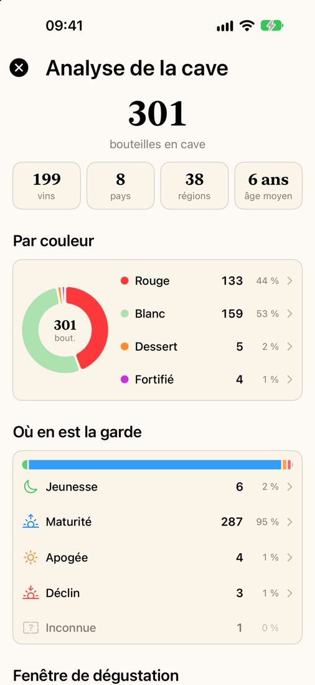
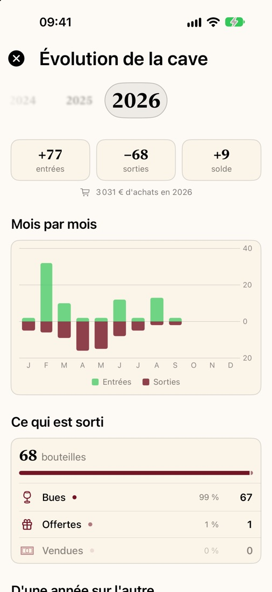
Confidentialité
Vos données restent chez vous
Pas de compte
Rien à créer, rien à retenir.
Tout est sur votre iPhone
Votre cave n'est envoyée sur aucun serveur.
L'IA, quand vous le demandez
Le scan et le Sommelier passent par OpenAI, après votre accord, révocable à tout moment. Vos prix, vos quantités et vos notes personnelles ne sont jamais envoyés.
Une sauvegarde à vous
Exportez votre cave dans une archive et restaurez-la quand vous voulez.
Prise en main
Cinq minutes pour commencer
-
Créez votre cave
Ma cave › Configurer la cave (l'icône de réglages en haut à droite). Donnez-lui un nom, le nombre d'étagères et de bouteilles par couche. L'aperçu 3D se met à jour pendant que vous réglez.
-
Ajoutez vos vins
Accueil › Scannez une bouteille, puis photographiez l'étiquette. Vérifiez la fiche, choisissez le nombre de bouteilles et la cave.
-
Rangez-les
Les nouvelles bouteilles attendent dans le sas. Dans Ma cave, touchez « Ranger maintenant » : la place suggérée s'allume, touchez-la pour poser la bouteille.
-
Demandez au Sommelier
Onglet Sommelier : choisissez l'occasion, et laissez-le choisir. « Je l'ouvre » retire la bouteille de la cave.
-
Sauvegardez
Accueil › Administration › Données › Créer une archive, à garder dans Fichiers ou sur votre Mac.
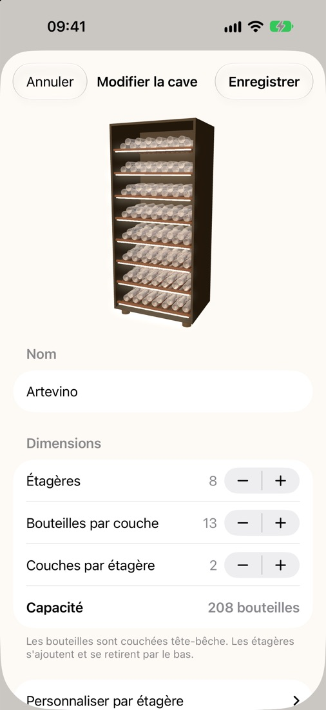
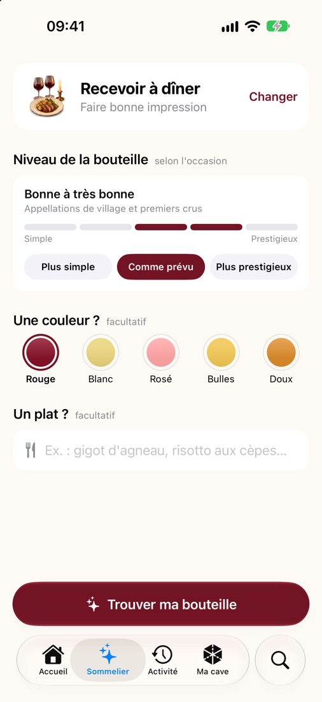
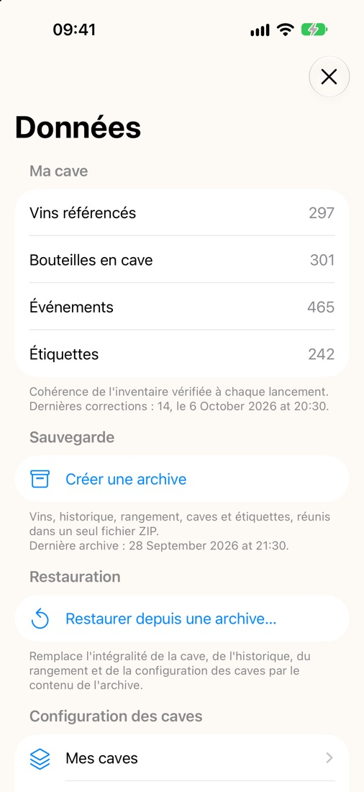
WineWhisper Grand Cru
Le sommelier et la cave 3D, sans limite
WineWhisper est gratuit, et votre liste de vins n'a pas de limite. Grand Cru lève les plafonds de l'IA et de la cave 3D.
Gratuit
Pour découvrir, et pour toujours
- Une liste de vins illimitéeFiches, saisie manuelle complète (cépages, garde, prix, notes), historique et statistiques.
- 10 scans d'étiquette offertsL'IA identifie le vin et remplit sa fiche. Un scan raté n'est pas décompté.
- Le Sommelier : 5 recherches offertesPuis 2 recherches par mois.
- Une cave 3DJusqu'à 24 bouteilles rangées, la taille d'une petite cave électrique.
- Sauvegarde et restaurationToujours gratuites.
WINEWHISPERGrand Cru
Tout le gratuit, et en plus :
- Scans illimitésL'IA identifie chaque vin et remplit sa fiche : garde, cépages, accords.
- Sommelier illimitéLa bonne bouteille pour chaque occasion, avec ou sans plat.
- Toutes vos caves en 3DRangez toutes vos bouteilles, dans autant de caves que vous le souhaitez.
- Finances de la caveLe montant investi et vos achats mois par mois, d'après vos prix d'achat.
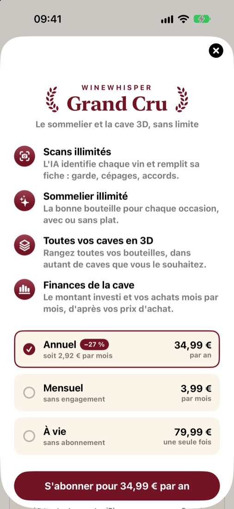
Prix en France, TVA comprise. Abonnements renouvelés automatiquement, résiliables à tout moment dans les réglages de l'App Store, au plus tard 24 heures avant l'échéance. Vos vins restent sur votre iPhone, avec ou sans Grand Cru.
Questions fréquentes
Bon à savoir
Faut-il un compte ?
Non. WineWhisper fonctionne sans compte et sans inscription.
WineWhisper est-il gratuit ?
Oui. La liste de vins, les fiches, la saisie manuelle, la garde, les statistiques et la sauvegarde sont gratuites et sans limite. Le scan, le Sommelier et la cave 3D ont une part offerte ; Grand Cru les rend illimités.
Que se passe-t-il si j'arrête Grand Cru ?
Rien n'est supprimé ni caché. Les fiches déjà remplies le restent, et vos caves restent visibles en 3D : vous pouvez toujours y retrouver une bouteille et la sortir. Seul le rangement de nouvelles bouteilles revient à la limite gratuite.
J'ai déjà payé sur un autre iPhone.
Dans l'écran Grand Cru, touchez « Restaurer les achats » avec le même compte App Store.
L'application fonctionne-t-elle sans connexion ?
Votre cave, la 3D, les fiches et les statistiques, oui. Le scan d'étiquette et le Sommelier ont besoin d'une connexion.
Et si l'IA se trompe sur une étiquette ?
Tout reste modifiable : le nom, le domaine, l'appellation, le millésime, les cépages et la période de garde.
Ma cave ne ressemble pas à un meuble standard.
Chaque cave se règle : de 1 à 12 étagères, de 4 à 20 bouteilles par couche, et jusqu'à 3 couches, étagère par étagère.
Comment changer de téléphone ?
Créez une archive dans Données, puis restaurez-la sur le nouvel iPhone.
Une question, une idée ?
Écrivez-nous à winewhisperhome@gmail.com.